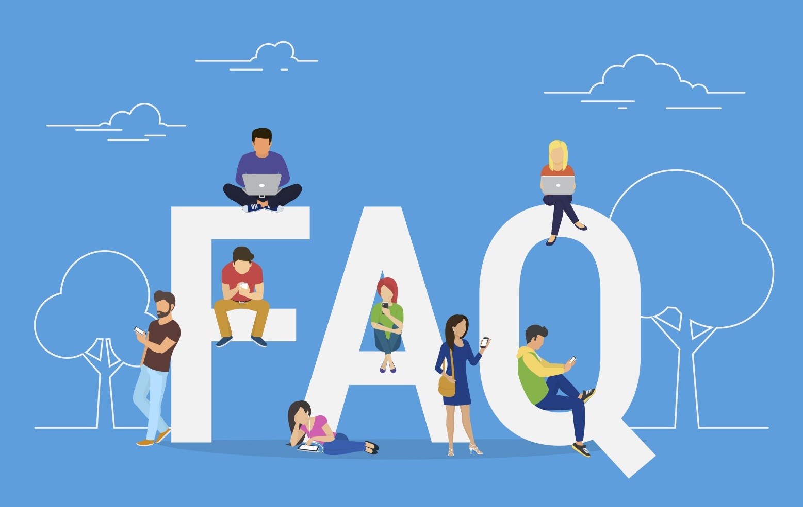
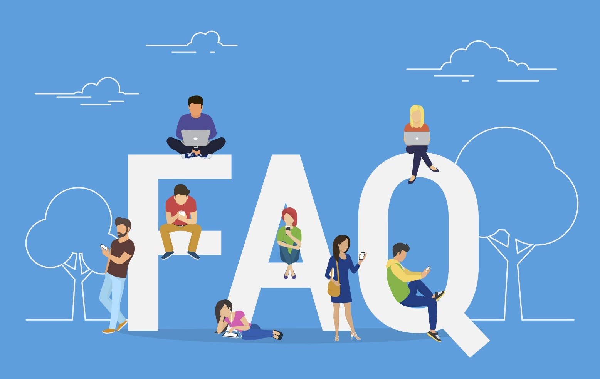

The Information Systems journey focuses on the dynamic world of Information Systems, digital literacy, and other essential tools in today's technology-driven business environment.
Digital literacy is a passport to success in the digital age, encompassing more than reading and writing. It empowers individuals to master tools like computers and smartphones, navigate the digital realm efficiently, and evaluate information effectively.
The Digital Information Literacy Toolkit includes powerful tools like Google Workspace (Google Docs, Google Drive, Gmail) and Microsoft Office (Word, Excel, PowerPoint, Access). These tools enhance computer literacy, preparing individuals for success in the digital era.
Data Visualization simplifies complex data into easy-to-understand visual representations, improving communication within teams. It bridges the gap between technical experts and non-experts, ensuring everyone comprehends the insights derived from the data.
Real-time Monitoring in healthcare allows providers to track treatment outcomes, spot disease patterns, and allocate resources efficiently. For instance, a hospital analyzes patient demographics and treatment effectiveness using visualizations to enhance patient care.
Customizing Information Systems involves tailoring them to specific business needs. This adaptation provides a competitive edge by optimizing tools according to unique requirements, thereby enhancing efficiency and effectiveness.
Data Ethics ensures responsible and ethical use of data in Information Systems. Businesses navigate privacy concerns and other ethical challenges by establishing principles and practices that prioritize the proper handling of sensitive information.
Quality of Information ensures that the data relied upon is accurate, reliable, and relevant for sound decision-making. Information Systems play a crucial role in maintaining and delivering high-quality information for effective decision-making processes.
Data Visualization allows professionals to tell compelling stories with data by creating interactive and engaging visualizations. This not only simplifies complex narratives but also makes the information more memorable and impactful.
Educational institutions use Data Visualization to track student academic performance, attendance patterns, and engagement levels. For instance, a school district may use visualizations to analyze exam scores across different subjects, identifying areas where students may need additional support and resources.
Digital literacy goes beyond traditional reading and writing skills. It involves mastering tools like computers and smartphones, empowering individuals to navigate the digital realm efficiently and critically evaluate information.
Information Systems provide the competitive edge needed in fast-paced, technology-driven business environments. They assist in gathering, storing, processing, and sharing information, transforming raw data into valuable knowledge for informed decision-making.
The Digital Information Literacy Toolkit includes powerful tools like Google Workspace (Google Docs, Google Drive, Gmail) and Microsoft Office (Word, Excel, PowerPoint, Access). These tools enhance computer literacy, preparing individuals for success in the digital era.
Data Visualization simplifies complex data into easy-to-understand visual representations, improving communication within teams. It bridges the gap between technical experts and non-experts, ensuring everyone comprehends the insights derived from the data.
Real-time Monitoring in healthcare allows providers to track treatment outcomes, spot disease patterns, and allocate resources efficiently. For instance, a hospital analyzes patient demographics and treatment effectiveness using visualizations to enhance patient care.
Customizing Information Systems involves tailoring them to specific business needs. This adaptation provides a competitive edge by optimizing tools according to unique requirements, thereby enhancing efficiency and effectiveness.
Data Ethics ensures responsible and ethical use of data in Information Systems. Businesses navigate privacy concerns and other ethical challenges by establishing principles and practices that prioritize the proper handling of sensitive information.
Quality of Information ensures that the data relied upon is accurate, reliable, and relevant for sound decision-making. Information Systems play a crucial role in maintaining and delivering high-quality information for effective decision-making processes.
Data Visualization allows professionals to tell compelling stories with data by creating interactive and engaging visualizations. This not only simplifies complex narratives but also makes the information more memorable and impactful.
Educational institutions use Data Visualization to track student academic performance, attendance patterns, and engagement levels. For instance, a school district may use visualizations to analyze exam scores across different subjects, identifying areas where students may need additional support and resources.
 
